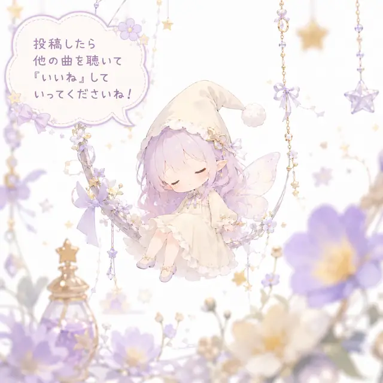

現在の投稿数
0

MUSIC STREAM
それは24時間で消える魔法。
Post a track
投稿されるのは埋め込みプレイヤーだけ。自分が権利を持つSUNOの曲リンクを貼ってください。
このページのブックマークをお願いします。
気になった曲はOPEN IN SUNOボタンを押して、ぜひSUNOのページを訪問してみてください。
自分が権利を持つSUNOリンクのみ投稿してください。
権利確認やご連絡により、曲は予告なく非表示・削除されることがあります。
表示にはSUNOの共有リンク / 埋め込みを利用しています。
タイムラインはメンテナンスで予告なく初期化されることがあります。
曲はタイムラインから24時間で消えます。
※AUTO PLAY は iPhone / Safari の環境では想定通りの挙動をしない可能性があります
現在の投稿数
0
現在のいいね数
0
現在の再生数
0
現在の超推し！数
0
SUPER LIKE PICKUP
HOURLY PICK
まだ曲はありません。最初の1曲を流してください。